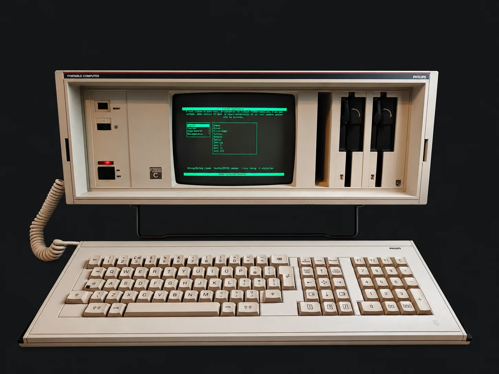

POWER
SASI
WEBASSEMBLY INITIALISEREN…
Emulator laden…
P2000C-webemulator
Dit is een webemulator van de Philips P2000C. De emulator draait P2000C Navigator en de meegeleverde CP/M-software volledig in uw browser.
Klik op het scherm om uw toetsenbord te gebruiken. Gebruik ↑/↓ om te kiezen, → of Enter om te openen en ← om terug te gaan. Met H opent u de hulp, met S start u de schermbeveiliging en met Q sluit u af naar CP/M. Met Reset start u de geëmuleerde computer opnieuw.
De Philips P2000C in beeld

← / → bladeren